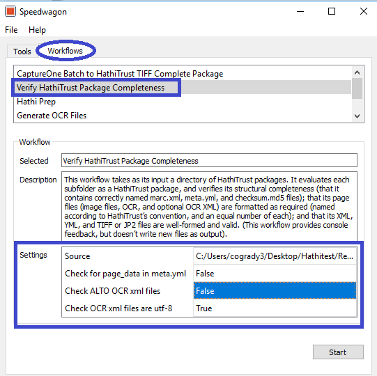

Internal Digitization Workflow¶
At the U of I, the digitization workflow only generates tiff files by batch. Each batch contains several books, using a naming convention Speedwagon will use. Additional files and repackaging are needed for a HT package.
Select Convert CaptureOne TIFF to Hathi TIFF package the Tools tab. Files are separated by book based on the prefix (unique ID), an underscore delimiter and suffix of sequential 8 digit padded zero number (HT requirement)
Speedwagon generate separate folders for each book in a batch
Speedwagon separates files for each book into generated folders
Click the input and output space to select folders – you can select the same location for both
Select Start.

Once complete, there will be duplicate files in the folder. Original files are detained as a precaution. The batch are deleted since another set of files are now split into folders [at this state we should not need to duplicate any files – they should be deleted].
Delete duplicate files
In the Workflow tab, Select Validate Metadata
Select the Input location and file type under profile.
Create JP2000 files for HT. Select convert TIFF to HathiTrust JP2. Select Input path and Output destination. Speedwagon will replace the tiffs with JP2000 files for each image, retaining the directory structure.
Select Generate OCR (Optical Character Recognition) in the Workflows. Select JP2000 (if this is the file type being used)
Txt files are generated for each image file in the same directory.
Generate MARC.XML file for each book. Speedwagon uses the U of I’s GetMarc tool to query the Voyager catalog record using the books unique bibliographic identifier. Metadata for HT packages at other institutions must be created according to their procedures.
Select Generate MARC.XML files in the Tools tab. Select the Input folder.
A MARC record is created for each book in the same directory as the image and txt files.
It is suggested verifying the 955 is present with the bibliographic ID in the marc.xml file for at least one item for each batch
Select Hathi Prep to create the meta.yml file.
Select Input and Image Format
In the Title Page Selection prompt, select the title page for each book in the drop-down menu. Select the images that represents the title. The U of I visually reviews each book to identify the title page before this step to identify the title page.
This will edit the meta.yml file designating the Title Page which will become the thumbnail appearing with a given book in HT. (U of I only include the title page in the page data for a book.)
Other institutions may want to include additional page data however Speedwagon only edits the title page in the meta.yml.
Once title pages are selected, the meta.yml files and checksum md5s are created.
Use Verify HathiTrust Package Completeness to verify each book/item contains files needed for HathiTrust.
Select Verify HathiTrust Package Completeness in the Workflows tab.
Select the file path for source.
Select setting for:
Check for the page_data in meta.yml and
Check ALTO OCR xml files to False or True depending on package delivered by vendor.
Change Check OCR xml files are utf-8 to True.

When the tool finishes, review the manifest in the prompt for errors. Speedwagon will list any missing files and in what directory files are missing. Speedwagon also lists the files present by book.

Send metadata file for books in batch to Zephir when HathiTrust Package Completeness test is successful. Depending on an institution’s, procedures, a metadata contact may do this. The U of I’s metadata contact is responsible for this.
HathiTrust sends a verification email with notification metadata was successfully received.
Zip Packages
In the Tools tab, select Zip Packages
Set output location. A specific server is designated for U of I HathiTrust package submission.

When zipping is complete send email to HathiTrust
(feedback@issues.hathitrust.org) using the following template:
e. HathiTrust sends 3 emails: I. Notification a submission was received. II. Status update and notification of any ingest issues. III. Verification content was successfully ingested in HathiTrust Digital Library